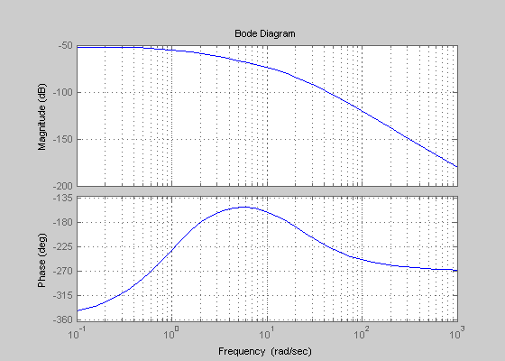
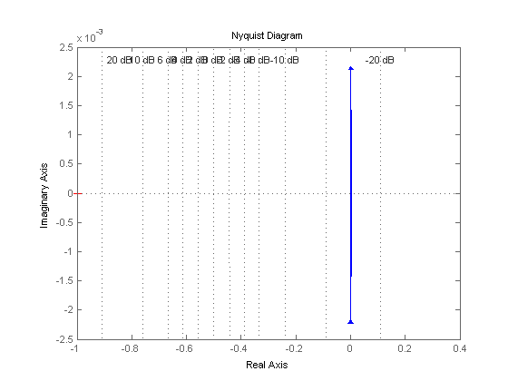
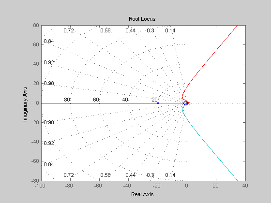

Contents
Diagrama de Bode %%
num = [1 1];
den = [1 38 321 -760 400];
t = tf(num, den)
zpk(t)
figure(1)
bode(num,den)
grid on;
w = logspace(-1,2);
[mag, phase, w]= bode(num, den, w);
magdB = 20 * log10(mag);
Transfer function:
s + 1
------------------------------------
s^4 + 38 s^3 + 321 s^2 - 760 s + 400
Zero/pole/gain:
(s+1)
----------------
(s+20)^2 (s-1)^2

Diagrama Polar Direto %%
roots(den)
figure(2)
nyquist(num,den)
grid on;
figure(3)
rlocus(num, den)
grid on;
ans =
-20.000000371251694
-19.999999628748323
0.999999999999999 + 0.000000023256003i
0.999999999999999 - 0.000000023256003i
 